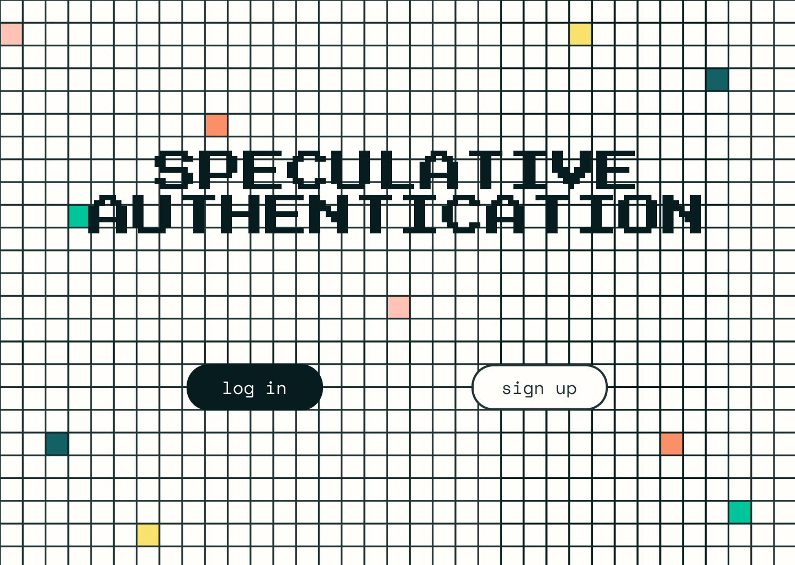

speculative authentication
2020
After stumbling across this website documenting the work of a group of artists, designers, and technologists creating speculative authentication methods, I became intrigued. Although they used machine learning in their implementations, I was curious whether I could implement a method that doesn't use machine learning, but still bypasses the traditional word password model.
After playing with color as a password, I changed my approach to using pixel art as a speculative authentication method. Still very much a work in progress (particularly around encryption/hashing/salting/security), but an intriguing exercise in reimagining how we authenticate ourselves online and wondering the possible "what ifs" around it.
 Landing page for the speculative authentication project
Users can select a sequence of tiles anywhere from 5 to 25. The text on the right will alert the user when they've used too many tiles.
As a designer + artist, I would definitely describe myself as visually inclined. I thought that an authentication method that focused on a visual implementation could be useful in more playful applications, such as a game or other interactive application.